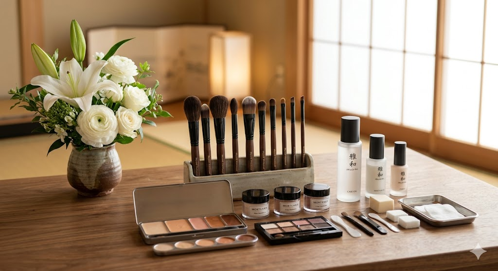

つむぎ
基本・死に化粧プラン
✕✕✕,✕✕✕ 円〜
闘病によるお疲れなどをお手伝いし、生前のような穏やかなお顔へと整えます。ご家族の皆様でお声をかけながら、メイクや髪のセットを一緒に仕上げていく基本のプランです。
私たちの想い
生前の尊厳を守り、ご家族の悲しみにどこまでも寄り添う。
長い闘病生活や突然の別れで変わってしまったお姿を、その人本来の「あの頃の笑顔」へと復元すること。それは単なるメイクではなく、全うされた人生への最大の敬意です。
あふれる涙も、途方に暮れる時間も、すべてが大切な愛の形です。少しずつ死を受け入れ、前を向けるようになるまで、一番身近な伴走者として寄り添い続けます。
尊厳を守られた故人様のお姿を前に、家族みんなで声をかけ、手を握り、看取る。「お任せ」の葬儀ではなく、家族全員がケアに参加することで、恐怖だった「死」は温かい「記憶」へと変わっていきます。
プロフィール

看護師 ／ 元美容師
美容師としてキャリアをスタートした後、医療の道へ進み看護師免許を取得。訪問看護を中心に終末期医療の現場を長く担当し、数多くの患者様とそのご家族の「死」に直面してきました。医療と美容、両方の現場を経験したからこそできる「その人らしさを取り戻す死に化粧（エンゼルケア）」と、ご家族の心に寄り添うお見取りのサポートを行っています。
サービス・料金
ご状況やご希望に合わせてお選びいただけるプランをご用意しています。
基本・死に化粧プラン
✕✕✕,✕✕✕ 円〜
闘病によるお疲れなどをお手伝いし、生前のような穏やかなお顔へと整えます。ご家族の皆様でお声をかけながら、メイクや髪のセットを一緒に仕上げていく基本のプランです。
一番選ばれています
お見取り伴走プラン
✕✕✕,✕✕✕ 円〜
息を引き取られる前後の、一番不安な時間を共に過ごします。ご自宅での環境を整え、お見取りの瞬間から死に化粧までをトータルで支える安心のプランです。
オプション
家族で紡ぐ湯灌とお召し替え
✕✕,✕✕✕ 円〜
ご家族の手で温かいお湯を使い、故人様の旅の疲れを癒やす湯灌を行います。生前お好きだったお洋服や、お着物への着付けもお手伝いいたします。
ご利用の流れ
ご依頼からお見送りまでの流れをご案内いたします。24時間いつでも対応しておりますので、まずは落ち着いてご連絡ください。
一
お電話または専用フォームよりご連絡ください。生前のご相談や、病院・施設からの緊急のご依頼にも24時間体制で丁寧にお応えします。
二
ご指定の場所へ迅速に駆けつけます。お見取りの環境を整え、ご家族の心に寄り添いながら大切な時間を支えます。
三
生前のお写真などを参考に、その人らしい穏やかなお顔立ちへと整えます。ご家族にもご参加いただきながら施術を行います。
四
お姿が整った後は、お葬儀や火葬へと温かい記憶とともにお送りいたします。葬儀社様への引き継ぎまで責任を持って伴走します。
施術実績・事例
ご家族とともに紡いだ、あたたかなお見送りの一例をご紹介します。

故人様：70代 女性（お母様）
長い闘病生活のすえに息を引き取られたお母様。お薬の影響でお肌の色が少し変わってしまい、頬も少し痩せておられました。ご家族からは「病気になる前の、いつも笑顔で綺麗だった頃のお母さんの姿で見送ってあげたい」というご希望をいただきました。
生前のお写真を参考に、お肌の色を健康的なトーンへと整え、穏やかなお顔立ちへと復元いたしました。最後にはご息女様の手でお気に入りの口紅を塗っていただき、ご家族皆様でお見送りの時間を過ごされました。
「病気で変わってしまった顔を見るのが辛かったのですが、まるで眠っているだけのようで、本当に救われました。最後に自分たちの手でメイクをして送り出せたことで、心の整理がついた気がします。」
よくある質問